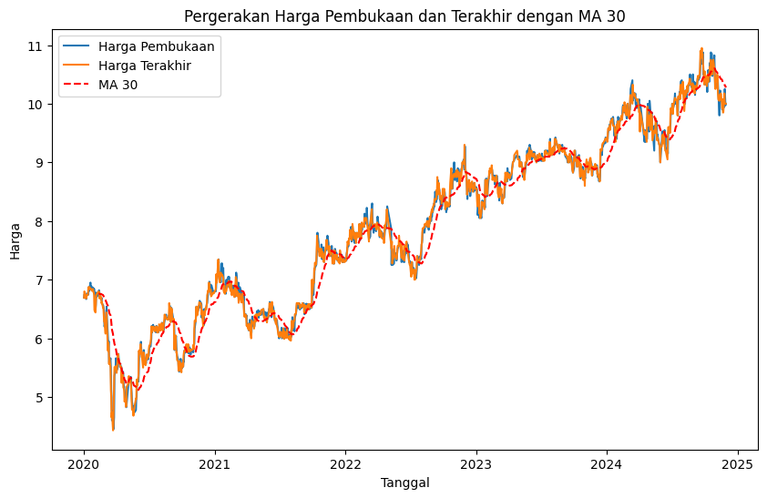

Proyek 1 : Prediksi Harga Saham BCA (BBCA)#
Import Library#
import pandas as pd
import numpy as np
import seaborn as sns
import matplotlib.pyplot as plt
from sklearn.neighbors import LocalOutlierFactor
from sklearn.model_selection import train_test_split
from sklearn.metrics import mean_squared_error, mean_absolute_percentage_error, r2_score, mean_absolute_error
from sklearn.linear_model import LinearRegression
Exsploratory Data Analysis (EDA)#
Load Data#
df = pd.read_csv('./BBCA-History.csv')
df = df.reindex(index=df.index[::-1])
df.head()
---------------------------------------------------------------------------
FileNotFoundError Traceback (most recent call last)
Cell In[2], line 1
----> 1 df = pd.read_csv('./BBCA-History.csv')
2 df = df.reindex(index=df.index[::-1])
4 df.head()
File ~/.local/lib/python3.9/site-packages/pandas/io/parsers/readers.py:1026, in read_csv(filepath_or_buffer, sep, delimiter, header, names, index_col, usecols, dtype, engine, converters, true_values, false_values, skipinitialspace, skiprows, skipfooter, nrows, na_values, keep_default_na, na_filter, verbose, skip_blank_lines, parse_dates, infer_datetime_format, keep_date_col, date_parser, date_format, dayfirst, cache_dates, iterator, chunksize, compression, thousands, decimal, lineterminator, quotechar, quoting, doublequote, escapechar, comment, encoding, encoding_errors, dialect, on_bad_lines, delim_whitespace, low_memory, memory_map, float_precision, storage_options, dtype_backend)
1013 kwds_defaults = _refine_defaults_read(
1014 dialect,
1015 delimiter,
(...)
1022 dtype_backend=dtype_backend,
1023 )
1024 kwds.update(kwds_defaults)
-> 1026 return _read(filepath_or_buffer, kwds)
File ~/.local/lib/python3.9/site-packages/pandas/io/parsers/readers.py:620, in _read(filepath_or_buffer, kwds)
617 _validate_names(kwds.get("names", None))
619 # Create the parser.
--> 620 parser = TextFileReader(filepath_or_buffer, **kwds)
622 if chunksize or iterator:
623 return parser
File ~/.local/lib/python3.9/site-packages/pandas/io/parsers/readers.py:1620, in TextFileReader.__init__(self, f, engine, **kwds)
1617 self.options["has_index_names"] = kwds["has_index_names"]
1619 self.handles: IOHandles | None = None
-> 1620 self._engine = self._make_engine(f, self.engine)
File ~/.local/lib/python3.9/site-packages/pandas/io/parsers/readers.py:1880, in TextFileReader._make_engine(self, f, engine)
1878 if "b" not in mode:
1879 mode += "b"
-> 1880 self.handles = get_handle(
1881 f,
1882 mode,
1883 encoding=self.options.get("encoding", None),
1884 compression=self.options.get("compression", None),
1885 memory_map=self.options.get("memory_map", False),
1886 is_text=is_text,
1887 errors=self.options.get("encoding_errors", "strict"),
1888 storage_options=self.options.get("storage_options", None),
1889 )
1890 assert self.handles is not None
1891 f = self.handles.handle
File ~/.local/lib/python3.9/site-packages/pandas/io/common.py:873, in get_handle(path_or_buf, mode, encoding, compression, memory_map, is_text, errors, storage_options)
868 elif isinstance(handle, str):
869 # Check whether the filename is to be opened in binary mode.
870 # Binary mode does not support 'encoding' and 'newline'.
871 if ioargs.encoding and "b" not in ioargs.mode:
872 # Encoding
--> 873 handle = open(
874 handle,
875 ioargs.mode,
876 encoding=ioargs.encoding,
877 errors=errors,
878 newline="",
879 )
880 else:
881 # Binary mode
882 handle = open(handle, ioargs.mode)
FileNotFoundError: [Errno 2] No such file or directory: './BBCA-History.csv'
Informasi Data#
df.info()
<class 'pandas.core.frame.DataFrame'>
RangeIndex: 1192 entries, 1191 to 0
Data columns (total 7 columns):
# Column Non-Null Count Dtype
--- ------ -------------- -----
0 Tanggal 1192 non-null object
1 Terakhir 1192 non-null float64
2 Pembukaan 1192 non-null float64
3 Tertinggi 1192 non-null float64
4 Terendah 1192 non-null float64
5 Vol. 1192 non-null object
6 Perubahan% 1192 non-null object
dtypes: float64(4), object(3)
memory usage: 65.3+ KB
Tranformasi Data#
df['Tanggal'] = pd.to_datetime(df['Tanggal'], dayfirst=True)
df['Perubahan%'] = df['Perubahan%'].str.replace('%', '').str.replace(',', '.').astype(float)
df['Perubahan%'] = df['Perubahan%'].astype(float)
df['Vol.'] = df['Vol.'].str.replace('M', 'e6').str.replace('B', 'e9').str.replace(',', '.').astype(float)
df.info()
<class 'pandas.core.frame.DataFrame'>
RangeIndex: 1192 entries, 1191 to 0
Data columns (total 7 columns):
# Column Non-Null Count Dtype
--- ------ -------------- -----
0 Tanggal 1192 non-null datetime64[ns]
1 Terakhir 1192 non-null float64
2 Pembukaan 1192 non-null float64
3 Tertinggi 1192 non-null float64
4 Terendah 1192 non-null float64
5 Vol. 1192 non-null float64
6 Perubahan% 1192 non-null float64
dtypes: datetime64[ns](1), float64(6)
memory usage: 65.3 KB
Missing Values#
df.isnull().sum()
Tanggal 0
Terakhir 0
Pembukaan 0
Tertinggi 0
Terendah 0
Vol. 0
Perubahan% 0
dtype: int64
Distribusi Data#
df.hist(figsize=(10, 8))
array([[<Axes: title={'center': 'Tanggal'}>,
<Axes: title={'center': 'Terakhir'}>,
<Axes: title={'center': 'Pembukaan'}>],
[<Axes: title={'center': 'Tertinggi'}>,
<Axes: title={'center': 'Terendah'}>,
<Axes: title={'center': 'Vol.'}>],
[<Axes: title={'center': 'Perubahan%'}>, <Axes: >, <Axes: >]],
dtype=object)
Box Plot#
sns.boxplot(data=df)
<Axes: >
Scatter Plot#
sns.pairplot(df)
<seaborn.axisgrid.PairGrid at 0x7f50d1361c10>
Korelasi Fitur#
correlation_matrix = df.corr()
print(correlation_matrix)
sns.heatmap(correlation_matrix, annot=True, cmap='coolwarm')
Tanggal Terakhir Pembukaan Tertinggi Terendah Vol. \
Tanggal 1.000000 0.954052 0.953257 0.954219 0.954276 -0.168952
Terakhir 0.954052 1.000000 0.997485 0.998712 0.998786 -0.187364
Pembukaan 0.953257 0.997485 1.000000 0.998525 0.998932 -0.191435
Tertinggi 0.954219 0.998712 0.998525 1.000000 0.998364 -0.172300
Terendah 0.954276 0.998786 0.998932 0.998364 1.000000 -0.202146
Vol. -0.168952 -0.187364 -0.191435 -0.172300 -0.202146 1.000000
Perubahan% 0.005946 0.037925 -0.018475 0.011126 0.005171 0.038654
Perubahan%
Tanggal 0.005946
Terakhir 0.037925
Pembukaan -0.018475
Tertinggi 0.011126
Terendah 0.005171
Vol. 0.038654
Perubahan% 1.000000
<Axes: >
Pergerakan Harga#
Perbandingan harga Pembukaan dan Terakhir#
# Calculate 30-day moving average
df['MA30'] = df['Terakhir'].rolling(window=30).mean()
plt.figure(figsize=(10, 6))
plt.plot(df['Tanggal'], df['Pembukaan'], label='Harga Pembukaan')
plt.plot(df['Tanggal'], df['Terakhir'], label='Harga Terakhir')
plt.plot(df['Tanggal'], df['MA30'], label='MA 30', linestyle='--', color='red')
plt.xlabel('Tanggal')
plt.ylabel('Harga')
plt.title('Pergerakan Harga Pembukaan dan Terakhir dengan MA 30')
plt.legend()
plt.show()

Perbandingan harga Tertinggi dan Terendah#
# Calculate 30-day moving average
df['MA30'] = df['Terakhir'].rolling(window=30).mean()
plt.figure(figsize=(10, 6))
plt.plot(df['Tanggal'], df['Tertinggi'], label='Harga Tertinggi')
plt.plot(df['Tanggal'], df['Terendah'], label='Harga Terendah')
plt.plot(df['Tanggal'], df['MA30'], label='MA 30', linestyle='--', color='red')
plt.xlabel('Tanggal')
plt.ylabel('Harga')
plt.title('Pergerakan Harga Tertinggi dan Terendah dengan MA 30')
plt.legend()
plt.show()
Pre-Processing#
Seleksi Fitur#
selected_features = ['Tanggal', 'Pembukaan']
df = df[selected_features]
df.set_index('Tanggal', inplace=True)
df
| Pembukaan | |
|---|---|
| Tanggal | |
| 2020-01-02 | 6.695 |
| 2020-01-03 | 6.750 |
| 2020-01-06 | 6.720 |
| 2020-01-07 | 6.735 |
| 2020-01-08 | 6.670 |
| ... | ... |
| 2024-11-22 | 9.925 |
| 2024-11-25 | 9.950 |
| 2024-11-26 | 10.250 |
| 2024-11-28 | 9.975 |
| 2024-11-29 | 10.000 |
1192 rows 1 columns
Deteksi Outlier#
Metode Local Outlier Factor (LOF)#
clf = LocalOutlierFactor(n_neighbors=20, contamination=0.1)
y_pred = clf.fit_predict(df)
print(y_pred)
print(np.where(y_pred == -1))
print(clf.negative_outlier_factor_)
[1 1 1 ... 1 1 1]
(array([ 4, 32, 34, 35, 40, 49, 56, 57, 58, 59, 60,
74, 76, 82, 85, 86, 87, 88, 89, 93, 94, 95,
96, 99, 100, 101, 105, 125, 129, 163, 164, 204, 205,
216, 224, 226, 234, 249, 257, 263, 292, 293, 295, 304,
322, 323, 328, 335, 338, 343, 350, 355, 358, 389, 430,
431, 432, 437, 439, 444, 449, 463, 470, 471, 472, 491,
528, 530, 540, 547, 565, 569, 570, 573, 578, 599, 601,
606, 609, 611, 618, 622, 631, 632, 641, 643, 644, 645,
689, 708, 711, 725, 728, 732, 746, 778, 782, 936, 943,
946, 971, 1006, 1050, 1084, 1141, 1142, 1143, 1144, 1145, 1146,
1157, 1159, 1160, 1161, 1162, 1163, 1166, 1167, 1168, 1169]),)
[-1.12145785 -1.01331066 -0.99124929 ... -1.00218762 -0.98732057
-0.94554397]
Metode Box Plot (Interquartile)#
sns.boxplot(data=df)
<Axes: >
Membuat lag feature#
def create_lagged_features(data, lags):
features = pd.DataFrame()
for lag in range(1, lags + 1):
features[f'Lag_{lag}'] = data.shift(lag)
return features
lags = 90
lagged_features = create_lagged_features(df['Pembukaan'], lags)
df_with_lags = pd.concat([df, lagged_features], axis=1).dropna()
# Split data into features (X) and target (y)
X = df_with_lags[[f'Lag_{i}' for i in range(1, lags + 1)]]
y = df_with_lags['Pembukaan']
X_train, X_test, y_train, y_test = train_test_split(X, y, test_size=0.2, shuffle=False)
Modelling#
model = LinearRegression()
model.fit(X_train, y_train)
y_pred = model.predict(X_test)
mse = mean_squared_error(y_test, y_pred)
mae = mean_absolute_error(y_test, y_pred)
mape = mean_absolute_percentage_error(y_test, y_pred)
r2 = r2_score(y_test, y_pred)
print(f'Mean Squared Error (MSE): {mse}')
print(f'Mean Absolute Error (MAE): {mae}')
print(f'Mean Absolute Percentage Error (MAPE): {mape}')
print(f'R-squared (R2): {r2}')
Mean Squared Error (MSE): 0.022960056415546323
Mean Absolute Error (MAE): 0.11535445318437261
Mean Absolute Percentage Error (MAPE): 0.011635162610601374
R-squared (R2): 0.8964008076701613
X
| Lag_1 | Lag_2 | Lag_3 | Lag_4 | Lag_5 | Lag_6 | Lag_7 | |
|---|---|---|---|---|---|---|---|
| Tanggal | |||||||
| 2020-01-13 | 6.765 | 6.740 | 6.670 | 6.735 | 6.720 | 6.750 | 6.695 |
| 2020-01-14 | 6.740 | 6.765 | 6.740 | 6.670 | 6.735 | 6.720 | 6.750 |
| 2020-01-15 | 6.745 | 6.740 | 6.765 | 6.740 | 6.670 | 6.735 | 6.720 |
| 2020-01-16 | 6.870 | 6.745 | 6.740 | 6.765 | 6.740 | 6.670 | 6.735 |
| 2020-01-17 | 6.805 | 6.870 | 6.745 | 6.740 | 6.765 | 6.740 | 6.670 |
| ... | ... | ... | ... | ... | ... | ... | ... |
| 2024-11-22 | 10.000 | 10.025 | 9.900 | 10.075 | 10.050 | 10.125 | 10.225 |
| 2024-11-25 | 9.925 | 10.000 | 10.025 | 9.900 | 10.075 | 10.050 | 10.125 |
| 2024-11-26 | 9.950 | 9.925 | 10.000 | 10.025 | 9.900 | 10.075 | 10.050 |
| 2024-11-28 | 10.250 | 9.950 | 9.925 | 10.000 | 10.025 | 9.900 | 10.075 |
| 2024-11-29 | 9.975 | 10.250 | 9.950 | 9.925 | 10.000 | 10.025 | 9.900 |
1185 rows 7 columns
latest_lags = X.iloc[-1].values.reshape(1, -1)
next_value = model.predict(latest_lags)
print(f'Next Forecasted Value: {next_value[0]}')
Next Forecasted Value: 9.975915507310853
/home/wchynto/.local/lib/python3.9/site-packages/sklearn/base.py:493: UserWarning: X does not have valid feature names, but LinearRegression was fitted with feature names
warnings.warn(